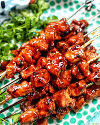
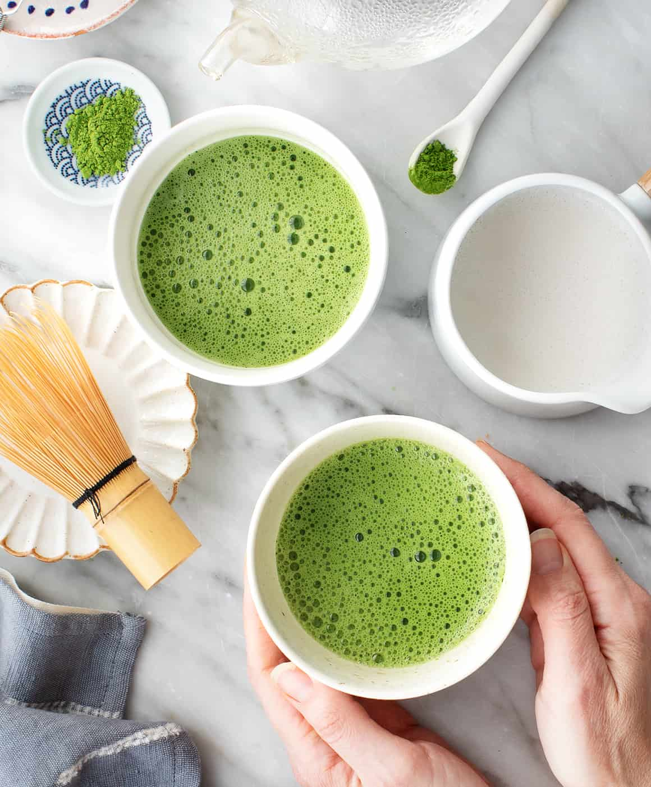

My favorites

1. Pork BBQ
I just love how sweet and smoky pork BBQs are prepared.

2. Fried Chicken
Even though I am allergic to chicken, I still it eat because it is worth it.

3. Matcha
I will eat anything as long as it is matcha be it solid or liquid foods.
4. Swimming
Swimming soothes my scoliosis.
5. Mobile Legends
This game will always be in my heart no matter what year it is.

6. Scheduling Notebook
Guides me on what to do.

7. Hanging out with friends
It helps me relieve stress and makes me cherish the moment.
8. Spending time with family
Nothing beats the moment with family.

9. Going to school
Learning programming and tech is something I look forward to but sometimes the pressure is stressing me a lot.
10. Reflecting
Processing your thougths and emotions helps you being better.